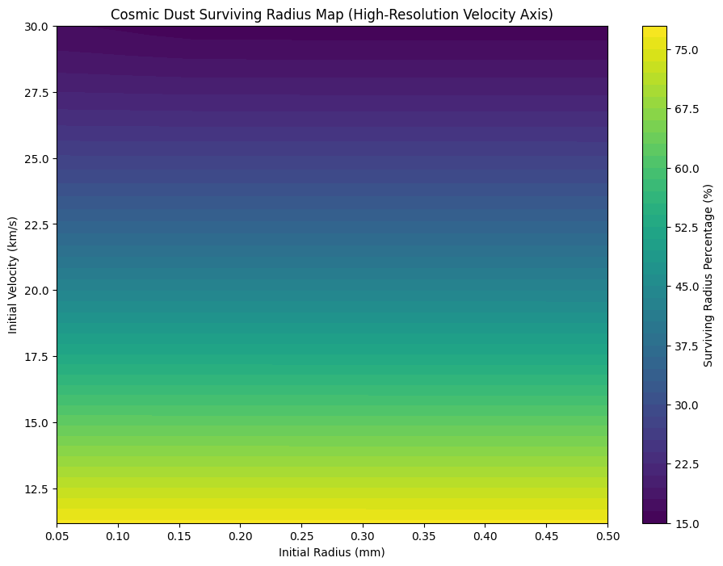

What survives
the journey down?一粒宇宙尘埃，
如何穿过大气？
A differential-equation model of a dust grain entering the atmosphere: gravity pulls it down, drag slows it, and heating removes mass.用微分方程描述尘埃颗粒进入大气的过程：重力驱动下落，阻力使其减速，受热导致质量损失。
How do initial size and speed affect a particle during atmospheric entry—and what can its final state tell us about its origin?初始大小与速度如何影响颗粒进入大气后的演化？最终状态又能告诉我们多少初始信息？
SCUDEM X 2025 team project with Fengrui Zhang, Yiye Huang, and Zening Wang. Our team received an Outstanding Award for Problem A: It is Raining Space Dust. I contributed modelling, code implementation, visualization, and recording the final explanatory video.SCUDEM X 2025 团队项目，成员为 Fengrui Zhang、Yiye Huang 与 Zening Wang。团队凭 Problem A: It is Raining Space Dust 获得 Outstanding Award。我负责建模、代码实现、可视化及最终讲解视频录制。
View source on GitHub ↗查看 GitHub 源码 ↗Final submission video · YouTube · external link最终提交讲解视频 · YouTube · 外部链接
Three coupled quantities, one physical story三个耦合变量，一个物理过程
The model assumes a spherical grain, vertical entry, an exponential atmosphere, constant material density, and fixed drag and heat-transfer coefficients. It tracks altitude h, downward speed v, and mass m; radius follows from the spherical volume.模型假设颗粒为球形、竖直进入指数密度大气，材料密度、阻力系数和传热系数固定。代码跟踪高度 h、向下速度 v 与质量 m，半径由球体积关系换算。
dh/dt = −vdv/dt = g − CD ρa A v² / (2m)dm/dt = −Λ ρa A v³ / (2Lv)A = πr² · m = 4πρpr³/3 · ρa(h) = ρ0e−h/HTranslate the physics把物理过程写成方程
Balance gravity and drag, then link heating to ablation through latent heat. The paper uses radius as a state; the notebook uses mass.平衡重力与阻力，再以汽化潜热把受热与烧蚀联系起来。报告以半径为状态变量，notebook 则使用质量。
Integrate the trajectory数值积分轨迹
A handwritten fourth-order Runge–Kutta implementation advances the notebook model. Initial radius and velocity are varied in a parameter scan.Notebook 用手写四阶 Runge–Kutta 推进状态，并通过改变初始半径和速度进行参数扫描。
Interrogate the result检验结果的含义
Compare trajectories and remaining fractions, then ask which conclusions depend on the model, stopping condition, or numerical resolution.比较轨迹和剩余比例，并追问结论如何依赖模型假设、停止条件与数值分辨率。
A view from the original report原报告中的参数图
The archived map shows a strong change with entry speed and a much smaller variation across initial radius. It is useful evidence of what the team explored, with its original meaning kept intact.已有热图显示，结果随进入速度明显变化，而沿初始半径方向变化较小。它记录了团队当时探索的关系；此处保留原图的指标含义。

Open full-size figure ↗查看原尺寸图表 ↗
When does initial radius cancel out?初始半径在什么条件下可以约去？
Within this constant-coefficient model, eliminating time links mass loss to changes in kinetic and gravitational potential energy. For positive mass and downward motion, the equations imply:在这一系数固定的模型内，消去时间可以将质量损失与动能、重力势能的变化联系起来。对于正质量、向下运动的解，方程给出：
Initial radius does not appear explicitly when comparing the same initial and final heights and speeds. That is a conditional model result: trajectories stopped at a shared time need not share the same final state. A radius fraction is (m/m₀)^(1/3), not m/m₀. This also makes the inverse question underdetermined when only a final mass is known.在初末高度与速度相同的比较中，初始半径不显式出现。这是有条件的模型结论：在同一时刻停止的轨迹，末状态未必相同。剩余半径比例为 (m/m₀)^(1/3)，并非 m/m₀；仅知道最终质量时，逆问题也通常无法唯一确定初始条件。
This identity was checked algebraically during the release review. It is not a new competition result or a claim about all real cosmic dust.该恒等关系在发布整理时作了代数核对，不是新的竞赛结果，也不是关于所有真实宇宙尘埃的普遍断言。
Keep the versions and units visible说明版本与单位的差别
| Record材料 | What it contains实际内容 |
|---|---|
| Paper & presentation报告与演示 | State h, v, r. Stated scope: 1 nm–0.1 mm and 6–70 km/s; the plotted map uses a narrower speed band and larger radii.状态变量 h、v、r。正文范围为 1 nm–0.1 mm、6–70 km/s；热图采用更窄的速度范围和更大的半径。 |
| Notebook trajectoriesNotebook 轨迹 | State h, v, m; time step 0.01 s. Both saved single-trajectory outputs stop at the 100 s time limit before reaching the ground.状态变量 h、v、m，步长 0.01 s。两条保存的单轨迹输出均在 100 s 时间上限停止，尚未到达地面。 |
| Notebook scanNotebook 扫描 | 250 parameter pairs; radius 0.05–0.50 mm, speed 11.2–30 km/s, default step 0.1 s. Its final mass ratio does not identify why integration stopped.250 组参数，半径 0.05–0.50 mm、速度 11.2–30 km/s，默认步长 0.1 s。最终质量比例未区分积分停止原因。 |
What the review exposed整理时发现的问题
- Small grains require much finer time resolution. A saved report plot contains negative downward speeds, indicating that its fixed-step numerical result needs scrutiny.小颗粒需要更细的时间分辨率。报告的一张保存曲线出现负的向下速度，提示其固定步长数值结果需要重新检验。
- The original kg-to-mg display multiplies by 10⁹; the correct factor is 10⁶. For density 3,000 kg/m³, a 0.1 mm-radius grain initially has about 0.0126 mg.原代码将 kg 换算为 mg 时乘了 10⁹，正确因子应为 10⁶。密度为 3,000 kg/m³、半径 0.1 mm 的颗粒，初始质量约为 0.0126 mg。
- The historical loops can step outside the physical state domain; a numerical mass crossing zero is not evidence of physically complete ablation.历史积分循环可能跨出物理状态范围；数值质量越过零，并不能证明颗粒在物理上完全烧蚀。
What is available in the repository公开代码提供什么
- The complete historical model and scan implementation, extracted into source files with provenance and numerical caveats.保留完整历史模型与扫描实现，提取为源文件并注明来源与数值局限。
- A separate guarded runner, dependencies, a small demonstration, and tests. Stop states and mass/radius units are explicit.另附带状态保护的运行入口、依赖、小型演示与测试，明确停止状态和质量／半径单位。
- The release checks validate packaging and selected mathematical properties. The full competition scan and all archived figures have not been reproduced.发布检查覆盖打包和部分数学性质；未完整重跑竞赛参数扫描，也未复现全部历史图表。
The next experiment下一步实验
Use event-aware integration and step-size convergence checks before interpreting a ground-arrival map. Align the paper and code parameter ranges, compare the equivalent radius and mass formulations, and add missing physics only with clearly separated model versions.在解释落地状态图之前，应使用事件感知的积分方法并做步长收敛检验；统一报告与代码的参数范围，对照半径与质量两种等价形式，再以明确区分的模型版本逐步补充缺失物理。
The award and team names were verified from the supplied certificate image. The original certificate, signatures, report, slide template, and source attachments are not republished. The presentation link opens YouTube; page title and access were checked, not the complete video content.奖项和三人署名已依据所提供证书图像核对。证书原件、签名、完整报告、演示模板和源附件不在本网站转载。讲解链接指向 YouTube，已核对页面标题与访问状态，未声称完整审看视频内容。
Explore the original interactive figures查看原始交互图
Three archived Plotly files animate precomputed trajectories. Open one only when you want to inspect it; this page does not download or embed them.三份历史 Plotly 文件用于播放预计算轨迹。需要查看时再点击打开，本页不会下载或嵌入这些大文件。
- Altitude vs time · 19.37 MB ↗高度随时间变化 · 19.37 MB ↗
- Radius remaining vs time · 19.55 MB ↗剩余半径随时间变化 · 19.55 MB ↗
- Velocity vs time · 20.59 MB ↗速度随时间变化 · 20.59 MB ↗
Each file contains 32 velocity frames from 6 to 68 km/s and six initial radii from 0.001 to 100 μm. Only 54 of 192 trajectories extend to 100 s; most end at 0.01 s, without a saved stopping reason. None of the recorded altitude endpoints is at the ground.每份文件包含 6–68 km/s 的 32 个速度帧和 0.001–100 μm 的六种初始半径。192 条轨迹中仅 54 条记录到 100 s，多数在 0.01 s 结束且没有停止原因标签；记录的高度终点均未到达地面。
The HTML velocity data are nonnegative, unlike an older report plot. The solver that generated these frames was not included, so the versions cannot be treated as identical. Original file bytes and third-party notices are preserved in the repository.HTML 速度数据非负，与旧报告的一张图不同。生成这些帧的求解器未附，不能直接视为同一版本。仓库保留原始文件字节和第三方声明。
Desktop viewing is recommended. The original files animate after opening; use Reset axes if switching frames leaves a clipped range. A Promise error occurred during one velocity-slider interaction, while the chart remained usable. These are historical artifacts, not a newly validated simulation.建议使用桌面浏览器。原文件打开后会播放动画；切换参数后若显示范围不合适，可点击 Reset axes。一次速度滑块操作出现 Promise 错误，但图表仍可用。这些是历史材料，并非新验证的模拟。 Viewing guide & licenses ↗查看说明与许可 ↗